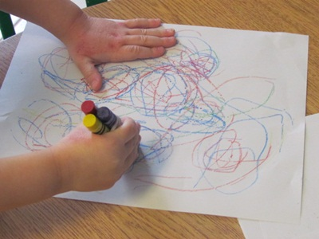

A view on 'EDUCATION FOR ALL' p.I

Hannah. (June 27, 2014). Animal Farm by George Orwell. Retrieved from (Source Link.)
Education is as important as making sure of the fact that you are living to this very day. Take the novel Animal Farm by George Orwell for example, wherein the animals tries their best to be as educated as possible. However, being someone not comfortable to it or being overly naïve enough to simply follow those who are educated. But this only makes their life worse. Their ignorance leads them to suffer despite the fact that they should be living in comfort after suffering from slavery for long.
A fair proof as to why education is important. A fair proof as to why education should be for all. No one should think that just because someone bests them when it comes to genius that they no longer need education. No one should think that because they are incomplete, an aberrant or even someone late enough to start that they don’t need education.
Without education, why is the world then turning around? Why does the world have all these complicated systems, all these technologies and all these governments? Why would such comforts exist if not for education?
-- P. Jacob
A Child's journey in Education

Pal, A. January 22, 2016. Untitled Image. Retrieved from (Source Link)
With your dark marker
You can make this world brighter
With your unique colors
Color the world with honors
With your bright interested eye
Make a legacy that will never die
With your good-natured smile
Make everything worth your while
With a brightly lit mind
You, who in education, is bound.
-- P. Jacob
A view on 'EDUCATION FOR ALL' p.II

Friedman, L. September 29, 2015. Untitled image. Retrieved from (Source Link)
Everybody wants to learn as long as he lives. Every child desires to go to school to be able to study, to play with his classmates and to ask help from his teacher.
How happy is he every time he receives a star from his teacher whenever he behaves in class?
How joyful does he feel every time he understands the lesson and be able to interact with the
whole class? The answer is he is very happy so who has a heart to deprive what this young being feels? Who has a heart to stop
this child from living the life he deserves? Anybody who has this kind of heart is a perfect hindrance to inclusive education.
Yes, inclusive education doesn’t choose, doesn’t pick the best and reject the unfortunate. From the word itself, it includes everyone who has a desire and who has the will to be provided with education. Whether you know everything or not, whether you live a perfect life or not, whether you are rich or poor, whether you are capacitated or not, you are still very welcome to have the education you always wanted. Everyone is treated fairly, full of just and love. Everybody is guided onto his ups or downs. Nobody stops anyone from learning and being educated the way he wants him to be educated. Everybody receives what is right.
-- C. Arzadon
From the opposite side

Depersonalization Recovery. (n.d.). Untitled image. Retrieved from (Source Link)
Growing up, I have never been a student of an inclusive education school with the exception of the university that I am attending now. I never sat in class with classmates with disabilities or special children. I grew up only encountering people who are as normal as I am. People with the quite the same views in life, quite the same standings, quite the same attitudes and quite the same atmospheres.
I never once in my life met someone from an inclusive education school who can show me the other side of the story. I want to try. I want to try sitting in one class with that inclusive feel. I want to prove to myself that there are different views. I want to prove to myself that there are people who can show me how it feels like to still feel normal, still feel included.
People outside the institution still feel this gaping hole of not being included, of not being on the same standing as anyone. But I know how different that would have been compared to people who are not born as normal as I am.
I wanted to learn something from them. I wanted to learn how to stand up without having the gift of standing. I wanted to learn how to express my thoughts without having the gift of speaking. I wanted to learn how to be creative and knowledgeable without having the gift of straight thinking and proper cognition. I wanted to be in their shoes and see how I would have seen the world. That is in the eyes of someone in a second home of acceptance – of inclusive education.
-- P. Jacob
The World that needs more inclusion

Kathy. July 18, 2012. Untitled Image. Retrieved from (Source Link)
Have you ever wondered how people's view on others might have changed if they are in an inclusive education institution?
Say, as a child, you are sitting in class with people of different shape and sizes, people in special cases and people of color different from yours?
Would that not have allowed you to think in a different state? Would that not have allowed you to feel safe? To feel that you will never be judged? To feel that everyone is as the same as you are?
Imagine sitting in one class like that now and think what could have been. Think of how it will make you more open minded about things.
In a world full of prejudice and of people trying to hurt another people, of biases and judgments, wouldn't an inclusive education that started when you are younger make your world wider or at least a better place?
Now, if you are not as young as you are, I'm not telling you to go find a school with an inclusion program. What I'm doing is planting a seed, a seed of hope if that's what you want to call it. I am giving you this seed for you to believe that someday this will grow in hearts of children normal or impaired who grew up around each other.
This seed will be a tall tree. Like the giving tree it will give you hope that there are children out there, who can grow up and see the world in a wider perspective and one step at a time, change it for the better.
You are not too late yourself, like this children the seed of hope might also make you see the same world as they do.
-- P. Jacob
Black is to black, white is to white

Stewart, D. April 6, 2011. Untitled photograph. Retrieved from (Source Link)
There is once this teacher who had given a children an activity, wherein they would need to draw in a piece of paper that bears the same color as the crayon given to them.
Black is to black. White is to white.
The teacher only specifies them to draw a picture on the given papers. Nothing else. At first, the children tried to do said activity as much as they can but it didn't work as well to them.
Since black is to black and white is white.
They at the moment, have no idea what to do with the activity given that truth. However, one of the students started borrowing a crayon from his classmate. The two of them exchanged and were able to do the activity in sucession. The others followed suit and they were happy with how it turned out.
Thus, this simply shows that everyone can be included. It is not a matter of difference. Being different is what allows you to meet a whole lot of people without meeting anyone with the same design as you are. But that only makes you different but it can't make you whole. So when these differences mix, they make the world burst out of the seams with colors that are breathing the same way as life.
-- P. Jacob
On Students wanting to be Inclusive Ed teachers
Untitled photograph. Retrieved from (Source Link)
Kudos to you. Yes, you. You who wants to be one of the teachers under the inclusive education institutions. You should really pat your head while reading this.
Kudos to you. Yes, you. It is amazing how you want to stand in front of students in an inclusive education. It is amazing how you want to be their second parent. How you want them to learn by your capable hands.
You see, not everyone would have gone that path. But I hope many will. I hope many will join hands with you in this path that you’ve taken. This path of understanding, of sacrifice, of joy, and especially, of children – all of them very special – smiling at you.
-- P. Jacob
Included

Extending a helping hand. Retrieved from (Source Link)
You are the same as everybody,
Oh, don’t be afraid, step forward please.
Unafraid. Yes, you should be unafraid.
As you can see they are happy to see you.
Real? Yes, those smiles are real.
Every one of you here are special,
Including you.
Now, come forward.
Come now, one step… another step… and another…
Laugh and smile. Yes, you are going to love this.
Under this institution, you won’t be an outcast.
Define yourself with the abilities that you have.
Everyone here are doing the same.
Don’t let your disability hinder your abilities.
-- P. Jacob